Este portal es una iniciativa de la gestión de la Dirección de Investigación Científica Humanística y Tecnológica (DICIHT) y del Sistema de Gestión de la Investigación (SGI), pensada para dar a conocer los temas principales y significativos de la universidad en la gestión de proyectos. Aquí se muestran las líneas más relevantes de investigación, con los Objetivos de Desarrollo Sostenible (ODS) como un agregado de valor y de visión hacia otras personas e instituciones, para que puedan encontrar proyectos y enfoques que respondan a distintas situaciones y necesidades. Explore por tema, busque por palabra y contacte al investigador responsable.
Cada proyecto se clasifica a partir de su título, palabras clave y objetivo general. Seleccione un tema para ver únicamente sus proyectos.
Filtre los proyectos según el ODS con el que se relacionan. El contador muestra cuántos proyectos aportan a cada objetivo.
Use la búsqueda y los filtros para encontrar proyectos por tema, año o palabra clave.